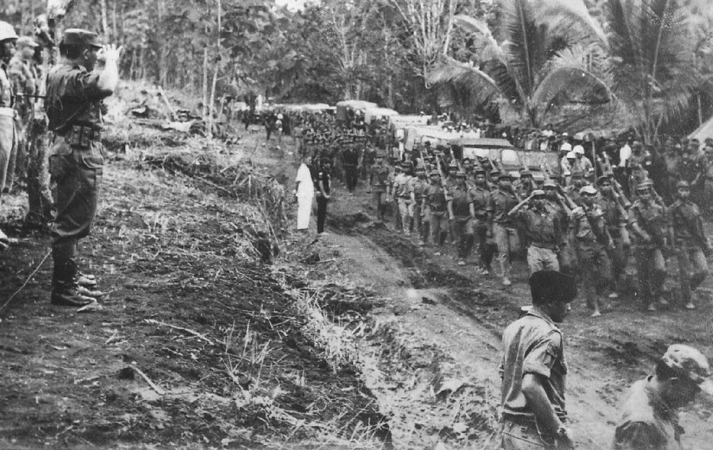
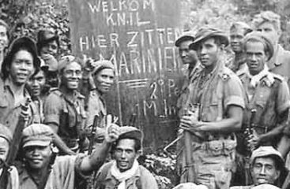
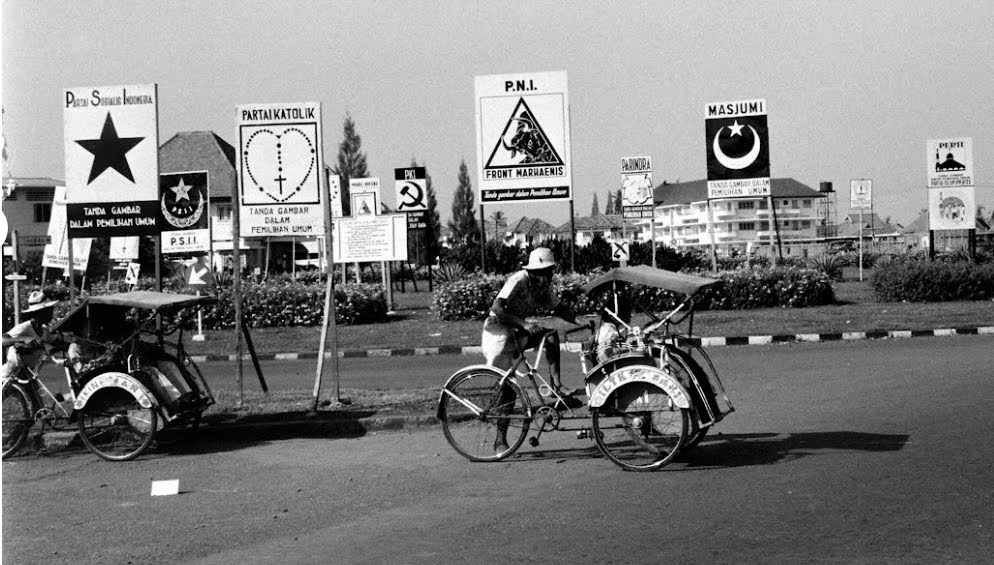
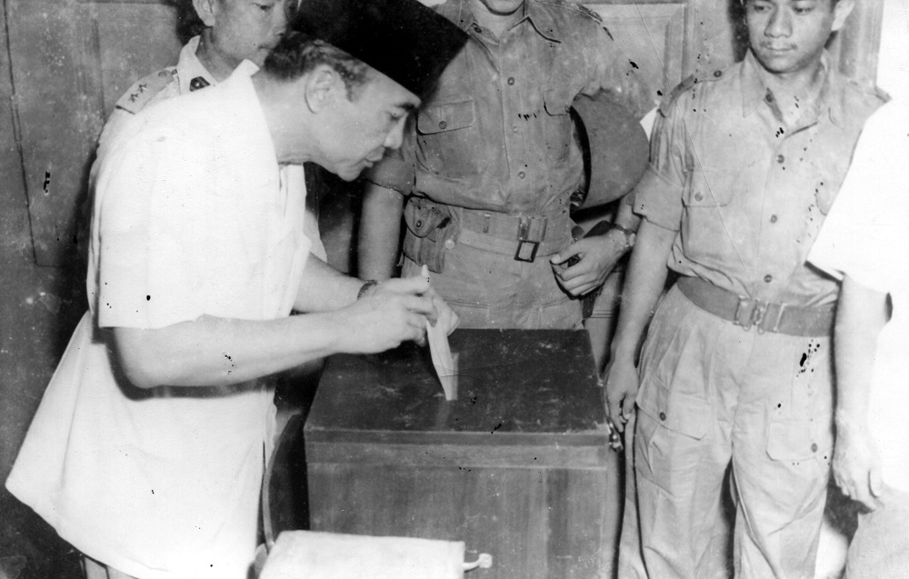
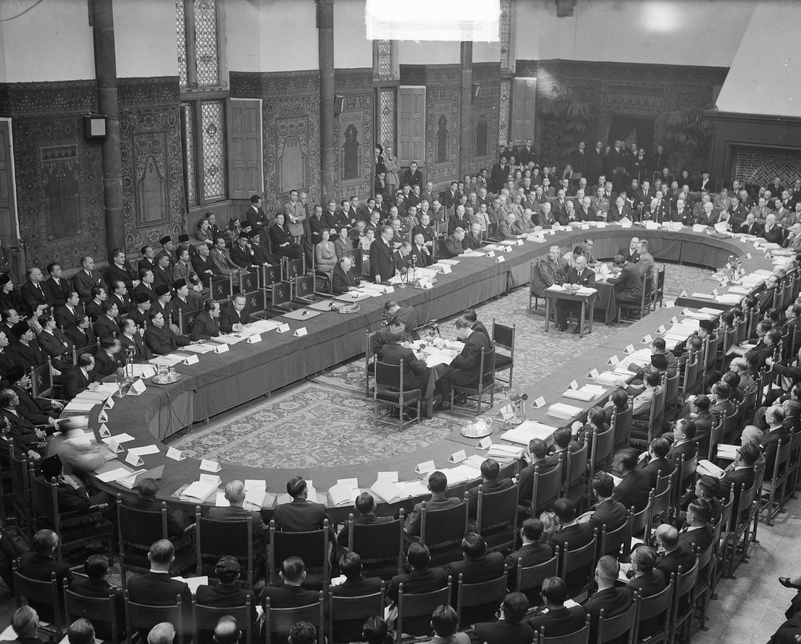
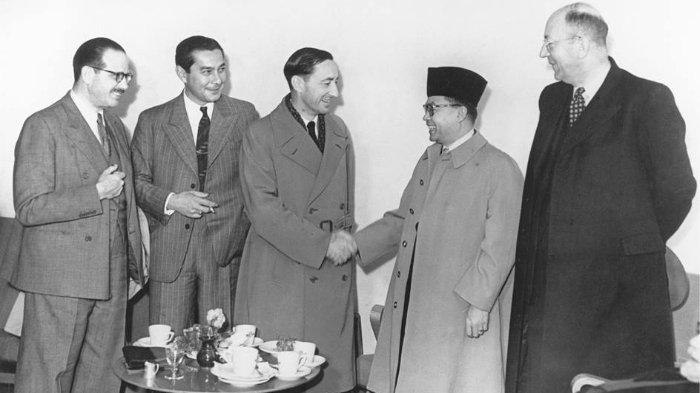
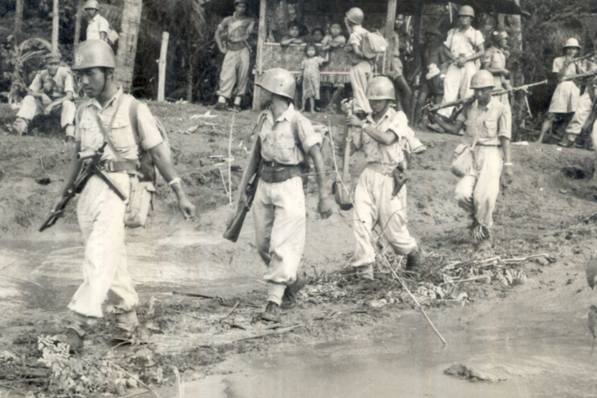
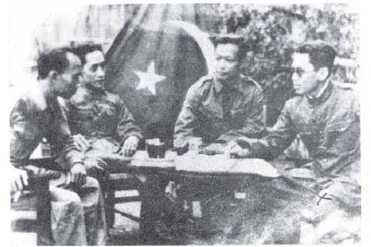

Demokrasi Parlementer
Demokrasi Parlementer adalah masa dimana Indonesia baru benar-benar merdeka dan penerapan Pancasila belum stabil. Pada era demokrasi ini, banyak ideologi lain yang ingin menggantikan Pancasila dan menyimpang dari nilai-nilai Pancasila. Demokrasi Parlementer atau yang biasa juga dikenal sebagai demokrasi liberal, merupakan masa dimana penerapan Pancasila masih ke arah ideologi liberal. Ideologi liberal adalah ideologi yang mengarah ke kebebasan/kepentingan individu, sehingga sila ke-4 (musyawarah mufakat) belum diterapkan.

🕮 Sejarah
|

|
🗣 Peristiwa Penting
PRRI/Permesta
Terjadi karena pertentangan pemerintah pusat beberapa daerah karena dana pembangunan yang tidak merata.
Ada kesenjangan kesejahteraan di pemerintah pusat dan daerah sehingga pejabat daerah merasa tdk puas
dengan kebijakan pemerintah pusat. |


|
|
|


|
Pemilu 1955Disebut sebagai pemilu paling demokratis di Indonesia, juga merupakan pemilu pertama yang terjadi di Indonesia setelah kemerdekaan. Pemilu ini terjadi pada 29 September 1955 dan diikuti oleh 29 partai politik. Pemilu ini menjadi salah satu peristiwa penting dalam sejarah demokrasi Indonesia karena berhasil diselenggarakan dengan baik dan menghasilkan pemerintahan yang sah. Ini merupakan pemilu pertama yang terlaksana secara Luber Jurdil. |
|
Konferensi Meja BundarMenjadi salah satu peristiwa penting pada demokrasi parlementer karena menghasilkan kesepakatan antara Indonesia dengan Belanda tentang pengakuan kedaulatan Indonesia. Konferensi ini diadakan di Den Haag, Belanda (23 Agustus-2 November 1949). Amerika Serikat juga hadir sebagai penengah. Beberapa kesepakatan hasil KBM adalah Belanda mengakui kedaulatan Indonesia, Indonesia menjadi negara kesatuan berbentuk republik, dan Ibu kota Indonesia ada di Jakarta. |


|
|
|


|
DI/TII
Terjadi karena adanya protes dari Kartosoewirjo yang merasa tidak puas dengan perjanjian Renville yang
menyebabkan Indonesia belum mampu 100% lepas dari penjajahan Belanda. Selain itu, Belanda juga menguasai
daerah-daerah penghasil pangan.
|